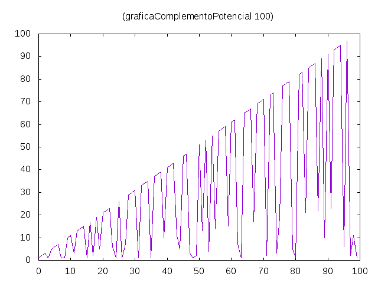

Complemento potencial
El complemento potencial de un número entero positivo x es el menor número y tal que el producto de x por y es un una potencia perfecta. Por ejemplo,
- el complemento potencial de 12 es 3 ya que 12 y 24 no son potencias perfectas pero 36 sí lo es;
- el complemento potencial de 54 es 4 ya que 54, 108 y 162 no son potencias perfectas pero 216 = 6^3 sí lo es.
Definir las funciones
complemento :: Integer -> Integer graficaComplementoPotencial :: Integer -> IO ()
tales que
- (complemento x) es el complemento potencial de x; por ejemplo,
complemento 12 == 3 complemento 54 == 4 complemento 720 == 5 complemento 24000 == 9 complemento 2018 == 2018
- (graficaComplementoPotencial n) dibuja la gráfica de los complementos potenciales de los n primeros números enteros positivos. Por ejemplo, (graficaComplementoPotencial 100) dibuja

y (graficaComplementoPotencial 500) dibuja

Comprobar con QuickCheck que (complemento x) es menor o igual que x.
Soluciones
import Data.Numbers.Primes (primeFactors) import Data.List (genericLength, group) import Graphics.Gnuplot.Simple (plotList, Attribute (Key, PNG, Title)) import Test.QuickCheck complemento :: Integer -> Integer complemento 1 = 1 complemento x = head [y | y <- [1..] , esPotenciaPerfecta (x*y)] -- (esPotenciaPerfecta x) se verifica si x es una potencia perfecta. Por -- ejemplo, -- esPotenciaPerfecta 36 == True -- esPotenciaPerfecta 72 == False esPotenciaPerfecta :: Integer -> Bool esPotenciaPerfecta x = mcd (exponentes x) > 1 -- (exponentes x) es la lista de los exponentes de la factorización prima -- de x. Por ejemplos, -- exponentes 36 == [2,2] -- exponentes 72 == [3,2] exponentes :: Integer -> [Integer] exponentes = map snd . factorizacion -- (factorizacion n) es la factorizacion prima de n. Por ejemplo, -- factorizacion 1400 == [(2,3),(5,2),(7,1)] factorizacion :: Integer -> [(Integer,Integer)] factorizacion n = [(x,genericLength xs) | xs@(x:_) <- group (primeFactors n)] -- (mcd xs) es el máximo común divisor de la lista xs. Por ejemplo, -- mcd [4,6,10] == 2 -- mcd [4,5,10] == 1 mcd :: [Integer] -> Integer mcd = foldl1 gcd -- La propiedad es prop_complemento :: (Positive Integer) -> Bool prop_complemento (Positive x) = complemento x <= x -- La comprobación es -- λ> quickCheck prop_complemento -- +++ OK, passed 100 tests. graficaComplementoPotencial :: Integer -> IO () graficaComplementoPotencial n = plotList [Key Nothing , PNG ("Complemento_potencial_" ++ show n ++ ".png") , Title ("(graficaComplementoPotencial " ++ show n ++ ")") ] (map complemento [1..n])